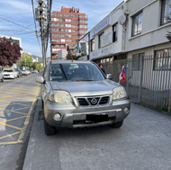
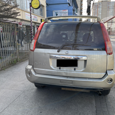

La forma de denunciar un vehículo mal estacionado a la Municipalidad de Concepción es:
- Usar la página Web que la Municipalidad tiene para estos efectos:
https://nuevo.vecino.concepcion.cl/Registro#
- Ingresar los datos solicitados, esto es: nombre, apellido, rut, fecha de nacimiento, dirección, teléfono y
email. Todos los datos son obligatorios.
- Luego solicita SELECCIONAR el asunto, en este caso, “Fiscalización vehículos mal estacionados”.
- Posterior a seleccionar el asunto se debe ingresar un mensaje. Por ejemplo: “Vehículo estacionado sobre la
vereda en calle Barros Arana frente al número 14xx, entre las calles Janequeo y Lautaro. Ha estado estacionado todo el día”
- A continuación se debe tomar fotos del auto, lo que se puede hacer de 2 formas:
1. Usando aplicación desde el celular: En este caso no sirve tomar fotos con el celular en forma previa, ya que el sistema requiere que a través del mismo celular se tomen las fotos en el momento. Para esto haga click en “Seleccione Imagen”. Al realizar esta acción se abrirá la aplicación de la cámara del celular y deberá tomar una foto, mostrando -idealmente- la patente del auto y que está estacionado sobre la vereda. Una vez tomada la foto debe elegir la opción “usar foto” (abajo, lado derecho). Repetir esto tomado una foto de la parte delantera del vehículo y otra de la parte trasera.
2. Usando aplicación desde un computador Aquí puede tomar las fotos con el celular, descargarlas en el computador y subirlas desde este último. El procedimiento es similar al anterior, con la diferencia que al hacer en click en “Seleccione Imagen” puede elegir cada imagen desde la carpeta en la que descargó las fotos en el computador.
- Finalmente, hacer click en el cuadrado de “No soy un robot” y luego en el recuadro "INGRESAR".
El procedimiento no es simple. Sin embargo, es la forma de que la Municipalidad tiene para denunciar este tipo de infracciones (y otras que podrá ver en la opción SELECCIONAR).
Finalmente, se insiste en denunciar por este medio los vehíclos mal estacionados, y no enviar fotos el whatsapp de la Junta de Vecinos, porque esto último no tendrá ningún efecto y los autos seguirán estacionándose sobre la vereda.
Ejemplos de fotos:
 